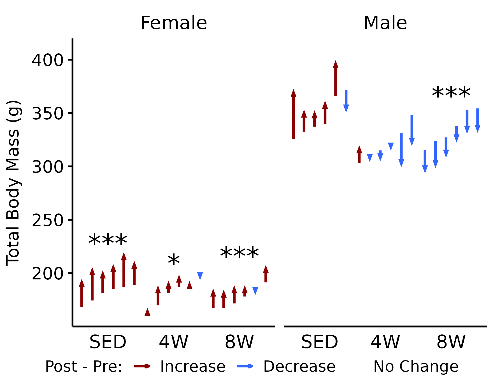
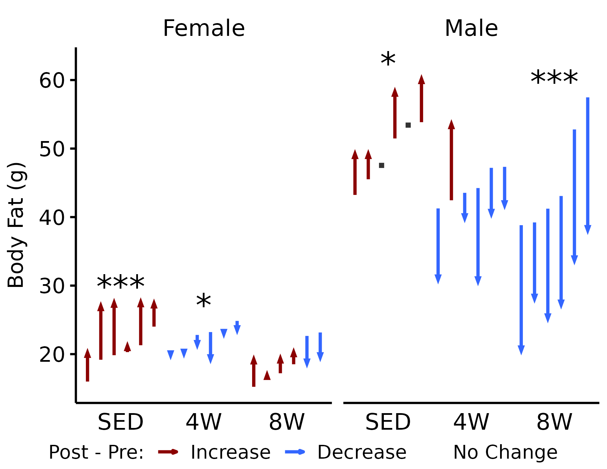
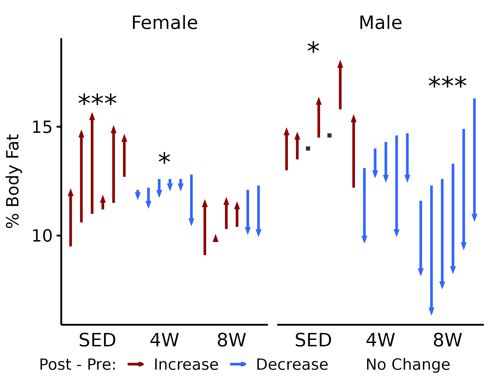
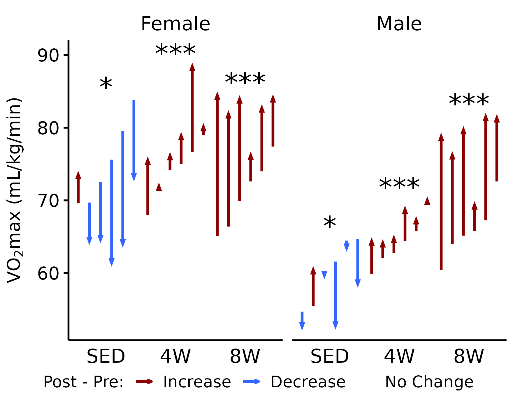
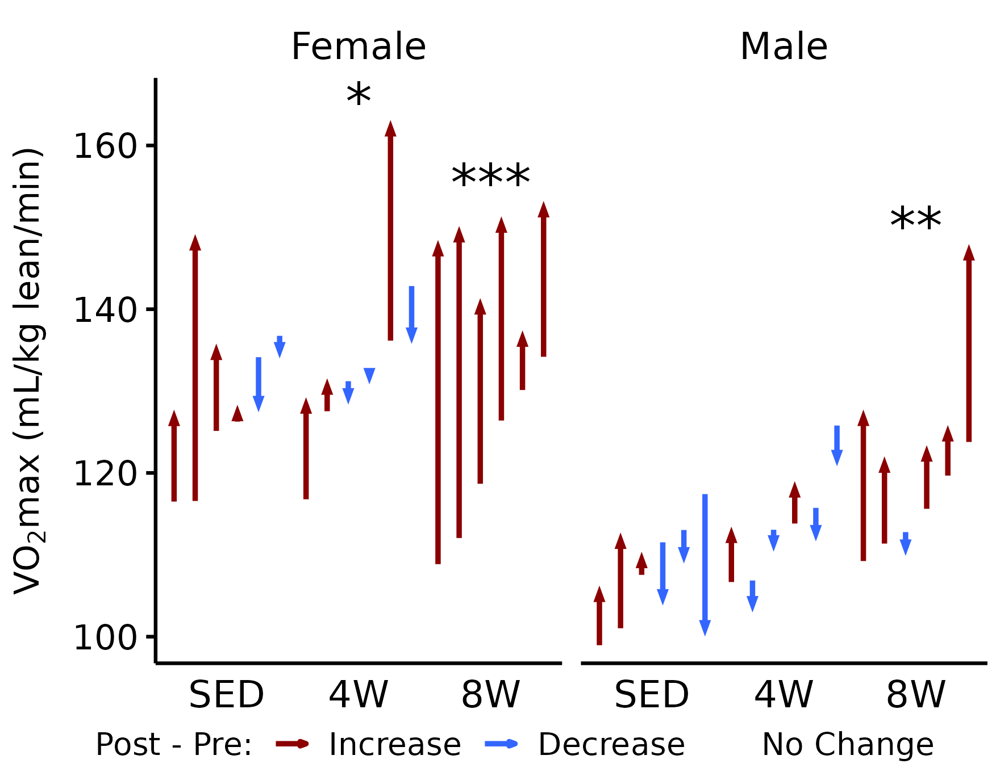

vignettes/articles/plot_pre_post.Rmd
plot_pre_post.RmdThis article generates plots of post- and pre-training measures of body mass, body composition, and VO\(_2\)max (Fig. 1B, C; Extended Data Fig. 1A–C).
library(MotrpacRatTraining6moWAT) # plot_pre_post
library(MotrpacRatTraining6moWATData)
library(dplyr)
library(ggplot2)
save_plots <- dir.exists(paths = file.path("..", "..", "plots"))
x <- PHENO_WAT %>%
filter(omics_analysis) %>%
rename(group = timepoint) %>%
mutate(age = "6M")
y <- rename(PHENO_WAT_STATS, group = timepoint)
# Body mass (measured on NMR day)
p_wt <- plot_pre_post(x,
pre = "pre_weight",
post = "post_weight",
stats = filter(y, response == "NMR Weight")) +
facet_grid(~ sex) +
labs(y = "Total Body Mass (g)")
p_wt
# NMR body fat
p_fat <- plot_pre_post(x, pre = "pre_fat", post = "post_fat",
stats = filter(y, response == "NMR Fat Mass")) +
facet_grid(~ sex) +
labs(y = "Body Fat (g)")
p_fat
# NMR % fat
p_pct_fat <- plot_pre_post(x, pre = "pre_fat_pct", post = "post_fat_pct",
stats = filter(y, response == "NMR % Fat")) +
facet_grid(~ sex) +
labs(y = "% Body Fat")
p_pct_fat
# VO2max (mL/kg/min)
p_vo2 <- plot_pre_post(
x, pre = "pre_vo2max_ml_kg_min",
post = "post_vo2max_ml_kg_min",
stats = filter(y, response == "VO2max (relative to body mass)") %>%
slice(rep(1:n(), times = 2)) %>%
mutate(sex = rep(c("Female", "Male"), each = 3))) +
facet_grid(~ sex) +
labs(y = latex2exp::TeX("VO$_2$max (mL/kg/min)"))
p_vo2
# VO2max (relative to lean mass)
p_vo2_lean <- plot_pre_post(
x, pre = "pre_vo2max_ml_kg_lean_min",
post = "post_vo2max_ml_kg_lean_min",
stats = filter(y, response == "VO2max (relative to lean mass)")) +
facet_grid(~ sex) +
labs(y = latex2exp::TeX("VO$_2$max (mL/kg lean/min)")) +
coord_cartesian(ylim = c(100, 165))
p_vo2_lean